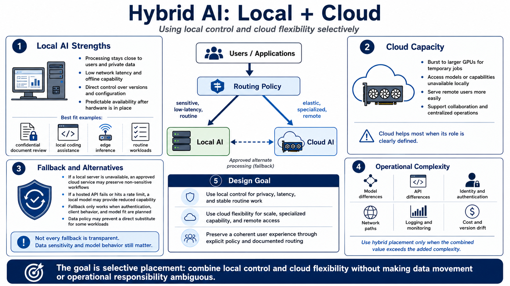

Why Use Local and Cloud Together?
Connecting to LMS... Progress: in progress

Narration
Local AI keeps selected processing close to users and private data. It can provide low network latency, offline capability, direct control over versions, and predictable availability after hardware is purchased. These strengths suit confidential document review, local coding assistance, edge inference, and routine workloads that fit existing systems.
Cloud capacity complements those limits. A team can burst to larger GPUs for a temporary job, call a model with capabilities unavailable locally, or serve remote users without distributing high-end hardware. Shared cloud services can support collaboration and centralized operations. The benefit appears when the cloud role is defined, not when every request is sent remotely by default.
Hybrid designs can also provide alternatives. If a local server is unavailable, an approved cloud service may preserve non-sensitive workflows. If a hosted API fails or reaches a rate limit, a local model may provide reduced capability. Redundancy is real only when clients, authentication, model behavior, and data policy support the alternate path. A fallback that cannot accept the same data is not a transparent substitute.
Using both environments reduces dependence on a single architecture but adds integration and operations. Teams must manage model differences, APIs, identities, network paths, logs, cost, and version drift. Adopt hybrid placement where the combined value exceeds that complexity. The aim is to use local control and cloud flexibility selectively, while preserving a coherent service for users.